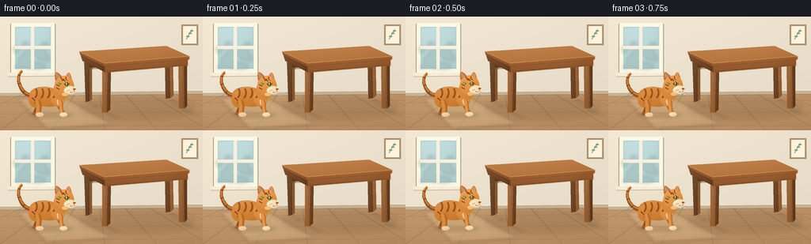
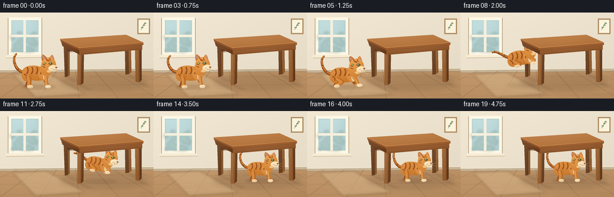
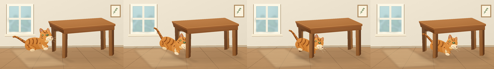

CODING AGENTS AS PIXEL WORLD MODELS
traex/GPT-6.1-Sol · dynamic_spatial_relationship_0008
点击播放 · 原生 RGB 像素
逐轮保存的候选
回放视频、检查图与代码变化。
每份候选均可单独播放。实际图片检查记录在下方工具轨迹中。
候选 01播放与检查图
点击播放 · 原生 RGB 像素


展开代码变化
--- 上一保存版本
+++ 本次保存版本
@@ -0,0 +1,253 @@
+from pathlib import Path
+import math
+import numpy as np
+from PIL import Image, ImageDraw, ImageFilter
+import artifact_io
+
+ROOT = Path(__file__).resolve().parent
+W,H,S = 256,144,4
+rng = np.random.default_rng(22)
+noise = rng.normal(0,1,(H*S,W*S)).astype(np.float32)
+
+def xy(points): return [(round(x*S),round(y*S)) for x,y in points]
+def bezier(points, steps=32):
+ if len(points)==4:
+ a,b,c,d=np.array(points,dtype=float)
+ return [tuple((1-t)**3*a+3*(1-t)**2*t*b+3*(1-t)*t*t*c+t**3*d) for t in np.linspace(0,1,steps)]
+ raise ValueError()
+def path(parts):
+ out=[]
+ for part in parts: out+=bezier(part)
+ return out
+
+def poly(im, pts, color): ImageDraw.Draw(im).polygon(xy(pts), fill=color)
+def line(im, pts, color, width=1):
+ ImageDraw.Draw(im).line(xy(pts),fill=color,width=max(1,round(width*S)),joint='curve')
+def oval(im, box, color):
+ ImageDraw.Draw(im).ellipse(tuple(round(v*S) for v in box),fill=color)
+def shaded(im, pts, color, strength=22, texture=.65, edge=None):
+ mask=Image.new('L',im.size); d=ImageDraw.Draw(mask); d.polygon(xy(pts),fill=255)
+ bb=mask.getbbox()
+ if not bb:return
+ x0,y0,x1,y1=bb
+ yy,xx=np.mgrid[y0:y1,x0:x1]
+ u=(xx-x0)/max(1,x1-x0);v=(yy-y0)/max(1,y1-y0)
+ light=strength*(.58-.46*u-.75*v)+strength*.22*np.sin(np.pi*u)
+ a=np.array(color)[None,None,:]+light[:,:,None]+noise[y0:y1,x0:x1,None]*texture
+ rgb=Image.fromarray(np.uint8(np.clip(a,0,255)))
+ im.paste(rgb,(x0,y0),mask.crop(bb))
+ if edge: line(im,pts+[pts[0]],edge,.35)
+def ell_points(cx,cy,rx,ry,n=80):
+ return [(cx+rx*math.cos(t),cy+ry*math.sin(t)) for t in np.linspace(0,2*math.pi,n)]
+def soft_shadow(im, box, opacity=30,blur=2):
+ layer=Image.new('RGBA',im.size)
+ oval(layer,box,(71,47,29,opacity))
+ layer=layer.filter(ImageFilter.GaussianBlur(blur*S))
+ im.alpha_composite(layer)
+
+# Fixed, gently textured room with daylight from the left.
+yy,xx=np.mgrid[0:H*S,0:W*S]
+v=yy/(H*S);u=xx/(W*S)
+wall=np.zeros((H*S,W*S,3),dtype=float)
+for k,c in enumerate((235,225,205)):
+ wall[:,:,k]=c+7*(1-u)-9*v+noise*.55
+bg=Image.fromarray(np.uint8(np.clip(wall,0,255))).convert('RGBA')
+# Floor and baseboard.
+floor_pts=[(0,98),(256,95),(256,144),(0,144)]
+shaded(bg,floor_pts,(185,143,99),strength=16,texture=.7)
+poly(bg,[(0,96),(256,93),(256,98),(0,101)],(198,178,148))
+line(bg,[(0,96),(256,93)],(249,239,216),1)
+line(bg,[(0,101),(256,98)],(147,121,89),.65)
+for x in [-140,-70,0,66,132,198,263,330,410]:
+ line(bg,[(120+(x-120)*.48,98),(x,144)],(149,113,77,140),.5)
+for y in [108,122,139]:
+ line(bg,[(0,y+1),(256,y-2)],(160,121,80,150),.45)
+# Long, subtly irregular wooden grain.
+for j in range(54):
+ x=rng.uniform(0,256);y=rng.uniform(102,146)
+ line(bg,[(x,y),(x+rng.uniform(8,30),y-.35)],(195,154,107,130),.22)
+# Window inset and illuminated wall.
+poly(bg,[(13,9),(70,9),(70,74),(13,74)],(173,151,118))
+poly(bg,[(14,8),(69,8),(69,72),(14,72)],(252,247,229))
+poly(bg,[(19,13),(64,13),(64,66),(19,66)],(175,205,205))
+shaded(bg,[(20,14),(63,14),(63,65),(20,65)],(185,213,213),14,.1)
+# Defocused foliage beyond the glass.
+glass=Image.new('RGBA',bg.size)
+for j in range(22):
+ x=rng.uniform(20,64);y=rng.uniform(33,65);r=rng.uniform(2,6)
+ oval(glass,(x-r,y-r,x+r,y+r),(127,163,143,65))
+glass=glass.filter(ImageFilter.GaussianBlur(2*S));bg.alpha_composite(glass)
+poly(bg,[(39,13),(43,13),(43,66),(39,66)],(246,240,221))
+poly(bg,[(19,37),(64,37),(64,41),(19,41)],(246,240,221))
+poly(bg,[(10,71),(72,71),(75,75),(9,76)],(247,236,211))
+line(bg,[(10,76),(74,75)],(169,145,110),.7)
+# Soft light pool on the floor.
+light=Image.new('RGBA',bg.size)
+poly(light,[(21,103),(77,100),(142,136),(59,142)],(255,236,192,48))
+light=light.filter(ImageFilter.GaussianBlur(2*S));bg.alpha_composite(light)
+# Wall hanging is simple, understated room context.
+poly(bg,[(229,10),(250,10),(250,36),(229,36)],(174,139,97))
+poly(bg,[(231,12),(248,12),(248,34),(231,34)],(251,243,222))
+line(bg,bezier([(235,29),(238,24),(239,21),(242,16)]),(109,134,100),.65)
+for p in [(237,25),(240,21),(242,18)]:
+ oval(bg,(p[0]-2,p[1]-1,p[0]+2,p[1]+1),(137,153,114))
+# Broad table cast shadow; repeated unchanged for consistency.
+soft_shadow(bg,(100,101,244,130),36,4)
+# Leg cast shadows.
+for x,y in [(109,107),(213,104),(132,121),(229,116)]:
+ layer=Image.new('RGBA',bg.size)
+ poly(layer,[(x-3,y),(x+3,y),(x+24,y+8),(x+13,y+9)],(66,45,25,25))
+ bg.alpha_composite(layer.filter(ImageFilter.GaussianBlur(1.3*S)))
+
+def table_back(im):
+ # Back legs and underside framing.
+ shaded(im,[(106,50),(113,50),(113,107),(108,108)],(104,65,36),17)
+ shaded(im,[(113,50),(116,48),(116,105),(113,107)],(133,88,47),16)
+ shaded(im,[(208,44),(214,45),(215,103),(209,104)],(107,67,37),17)
+ shaded(im,[(214,45),(218,46),(219,100),(215,103)],(145,94,50),18)
+ shaded(im,[(111,53),(213,48),(213,60),(113,65)],(100,60,34),16)
+ line(im,[(114,66),(210,61)],(88,53,29),.7)
+
+def table_front(im):
+ # Near legs have visible bevelled sides.
+ shaded(im,[(129,63),(136,62),(135,121),(129,121)],(151,97,51),24)
+ shaded(im,[(136,62),(140,60),(139,118),(135,121)],(104,62,32),14)
+ shaded(im,[(225,56),(232,55),(233,116),(226,116)],(146,92,47),24)
+ shaded(im,[(232,55),(236,53),(236,113),(233,116)],(96,56,28),13)
+ for x,y1,y2 in [(132,65,118),(229,60,113)]:
+ line(im,[(x,y1),(x+.5,y2)],(169,111,60),.35)
+ line(im,[(x+1.8,y1+3),(x+1.3,y2-1)],(116,72,36),.25)
+ # Deep aprons establish the sheltered space below.
+ shaded(im,[(131,59),(237,51),(237,62),(132,71)],(145,88,45),22)
+ line(im,[(135,69),(233,61)],(100,59,30),.6)
+ shaded(im,[(101,46),(132,59),(132,70),(104,56)],(112,66,33),20)
+ # Thick tabletop, top surface and thin polished highlight.
+ shaded(im,[(100,44),(210,37),(239,50),(131,59)],(185,121,65),20)
+ shaded(im,[(100,44),(131,59),(131,63),(101,48)],(145,86,43),17)
+ shaded(im,[(131,59),(239,50),(239,54),(131,63)],(154,92,45),20)
+ line(im,[(100,44),(131,59),(239,50)],(219,157,92),.65)
+ line(im,[(102,48),(131,63),(238,54)],(112,66,33),.45)
+ # Fine parallel grain, clipped to the top.
+ mask=Image.new('L',im.size);ImageDraw.Draw(mask).polygon(xy([(100,44),(210,37),(239,50),(131,59)]),fill=255)
+ grain=Image.new('RGBA',im.size)
+ for j in range(13):
+ p=j/13
+ sy=44+15*p
+ line(grain,bezier([(101+30*p,sy),(139,sy-1),(183,sy-4.5),(211+28*p,sy-7)]),(122,72,37,75),.24)
+ im.alpha_composite(Image.composite(grain,Image.new('RGBA',im.size),mask))
+
+# Animate a cat in a local 2D coordinate system. Limbs, ears and face remain
+# coherently attached to its shaded body throughout the leap.
+def cat(im,cx,cy,scale=1,pose=0,pitch=0,phase=0):
+ ang=math.radians(pitch);ca,sa=math.cos(ang),math.sin(ang)
+ def T(points): return [(cx+scale*(x*ca-y*sa),cy+scale*(x*sa+y*ca)) for x,y in points]
+ def P(points,col,strength=20,edge=None): shaded(im,T(points),col,strength,.45,edge)
+ def E(x,y,rx,ry,col,strength=20): P(ell_points(x,y,rx,ry),col,strength)
+ def L(points,col,width=.7):line(im,T(points),col,width*scale)
+ def B(parts,col,strength=20):P(path(parts),col,strength)
+ crouch=max(0,-pose);flight=max(0,pose)
+ # Tail changes from a gently raised curve to a streamlined arc.
+ sw=math.sin(phase)*3
+ a=(-18,-2)
+ if flight:
+ controls=[a,(-31,-8),(-40,-18+sw),(-48,-14+sw)]
+ else:
+ controls=[a,(-35,-1),(-42,-28+sw),(-32,-33+sw)]
+ pts=bezier(controls)
+ for k in range(len(pts)-1):
+ L(pts[k:k+2],(150,78,28),max(2.0,6.0-3.5*k/len(pts)))
+ # highlight on tail edge and ring markings
+ L([(x,y-1) for x,y in pts],(208,128,53),1.9)
+ for k in [9,17,25]:
+ p=np.array(pts[k]);q=np.array(pts[min(k+1,len(pts)-1)])
+ vec=q-p;vec=vec/(np.linalg.norm(vec)+1e-6);normal=np.array([-vec[1],vec[0]])
+ L([tuple(p-normal*1.7),tuple(p+normal*1.7)],(116,62,27),1.3)
+ # Far legs, tucked while airborne.
+ footy=21-11*flight-8*crouch
+ hind=[(-15,4),(-12,11),(-16+8*flight,footy)]
+ front=[(10,3),(15,12-7*flight),(20-8*flight,footy)]
+ L(hind,(145,79,34),6)
+ E(hind[-1][0]+1,footy,4.3,2.2,(157,92,40),10)
+ L(front,(155,89,37),5)
+ E(front[-1][0]+1,footy,4,2.2,(205,154,95),10)
+ # Main torso and chest, smooth organic silhouette.
+ B([[(-23,-2),(-23,-13),(-5,-16),(8,-11)],[(8,-11),(16,-10),(22,-1),(18,7)],[(18,7),(10,15),(-10,12),(-17,8)],[(-17,8),(-21,8),(-24,3),(-23,-2)]],(205,126,49),28)
+ E(-15,3,9,10,(207,127,52),25)
+ E(13,1,9,11,(215,139, sixty:=64),22)
+ # Pale chest and belly highlights.
+ B([[(16,-7),(20,-6),(22,4),(17,10)],[(17,10),(13,12),(11,8),(12,3)],[(12,3),(15,-1),(15,-4),(16,-7)]],(234,201,147),18)
+ # Tabby stripes curl over the back and flank.
+ for dx in [-15,-7,1,8]:
+ L(bezier([(dx,-11),(dx+2,-7),(dx+2,-3),(dx-1,1)]),(144,76,26),2)
+ L(bezier([(dx+.2,-10),(dx+2,-7),(dx+1,-4),(dx,-3)]),(164,87,29),.65)
+ L(bezier([(-20,1),(-16,3),(-15,6),(-16,8)]),(149,77,27),1.8)
+ # Near legs with anatomically bent hocks on takeoff.
+ if flight:
+ hindpts=[(-13,4),(-4,10),(-11,13)]
+ forepts=[(15,2),(22,7),(17,12)]
+ elif crouch:
+ hindpts=[(-13,5),(-4,11),(-15,footy+1)]
+ forepts=[(15,3),(20,9),(23,footy+1)]
+ else:
+ hindpts=[(-13,4),(-11,12),(-12,22)]
+ forepts=[(16,2),(17,13),(18,22)]
+ L(hindpts,(187,104,36),7)
+ L([(x-1,y) for x,y in hindpts],(216,140,61),4.2)
+ E(hindpts[-1][0]+2,hindpts[-1][1],5,2.7,(238,206,158),14)
+ L(forepts,(198,114,42),5.5)
+ L([(x-.6,y) for x,y in forepts],(224,150,70),3.3)
+ E(forepts[-1][0]+2,forepts[-1][1],4.8,2.7,(244,219,180),14)
+ for pt in [hindpts[-1],forepts[-1]]:
+ for dx in [2,4]: L([(pt[0]+dx,pt[1]+.4),(pt[0]+dx,pt[1]+1.9)],(158,127,91),.32)
+ # Neck, triangular ears, and shaded three-quarter-profile head.
+ E(17,-8,10,12,(215,136,57),22)
+ B([[(10,-21),(7,-35),(12,-34),(19,-25)],[(19,-25),(16,-22),(13,-21),(10,-21)]],(191,110,44),22)
+ P([(11,-24),(10,-31),(16,-26)],(196,139,117),10)
+ B([[(22,-24),(26,-35),(29,-33),(31,-20)],[(31,-20),(28,-19),(25,-21),(22,-24)]],(207,126,53),24)
+ P([(25,-25),(27,-31),(29,-23)],(205,146,125),10)
+ E(21,-15,12.2,12.2,(222,145,66),27)
+ # Forehead pattern and cheek stripes.
+ for pts in [[(16,-26),(19,-21),(20,-23),(22,-20)],[(23,-26),(23,-23),(25,-21)],[(11,-16),(15,-14)],[(11,-12),(15,-10)]]:
+ L(pts,(139,74,27),1.2)
+ # Eyes outlined with a dark upper eyelid and warm green irises.
+ P([(21,-17),(24,-19),(28,-17),(25,-14),(22,-15)],(66,65,36),4)
+ E(24.6,-16.9,2.15,1.95,(153,176,93),8)
+ E(25.2,-17, .65,1.7,(29,38,27),2)
+ E(24.3,-17.5,.45,.43,(255,246,211),1)
+ L([(21,-17),(24,-19),(28,-17)],(89,54,26),.55)
+ P([(13,-18),(15,-19),(17,-17),(15,-15)],(87,87,47),6)
+ E(15.2,-17.2,1.15,1.4,(166,182,103),4)
+ L([(15.8,-18),(15.8,-16)],(42,43,24),.6)
+ # Cream cheek/muzzle, pink nose and tiny smiling mouth.
+ E(29,-9,7.1,5.2,(246,219,173),16)
+ E(25,-8.6,4.3,4.0,(248,226,189),12)
+ P([(33,-11.5),(36,-10.4),(33.5,-8.7),(32,-10)],(141,84,70),5)
+ L([(33.5,-9),(33,-6.4),(30,-5.5),(28,-6.2)],(103,68,43),.5)
+ E(22,-3.7,4,2.2,(234,193,130),10)
+ for x,y in [(27,-9),(29,-7),(25,-8)]: E(x,y,.35,.32,(129,94,60),1)
+ for pts in [[(28,-8),(37,-9),(42,-11)],[(28,-7),(38,-6),(43,-5)],[(27,-6),(36,-3),(40,0)]]:
+ L(pts,(248,236,204),.33)
+ # Short fur highlights reinforce form without framewise noise.
+ for j in range(18):
+ x=-18+(j*7.31)%32;y=-5+(j*3.13)%11
+ L([(x,y),(x+1.4,y+.4)],(226,151,70),.24)
+
+frames=[]
+trajectory=[
+ (60,102,1,0,0),(60,102,1,0,0),(60,101.8,1,0,-1),
+ (61,102,1,0,-1),(61,102,1,0,0),(62,105,1,-.55,-2),
+ (65,108,1,-1,-6),(79,93,.99,.75,-14),(101,76,.97,1,-9),
+ (124,70,.95,1,-2),(146,77,.93,1,7),(164,89,.91,.65,10),
+ (174,99,.89,-.35,3),(177,102,.89,-.65,0),
+ (177,97,.89,0,0),(177,96.5,.89,0,0),(177,96.5,.89,0,0),
+ (177,96.6,.89,0,0),(177,96.6,.89,0,0),(177,96.5,.89,0,0)]
+for i,(cx,cy,sc,pose,pitch) in enumerate(trajectory):
+ im=bg.copy();table_back(im)
+ ground=124-(cx-60)/117*8
+ height=max(0,ground-(cy+20*sc))
+ soft_shadow(im,(cx-25+height*.1,ground-3,cx+33-height*.2,ground+4),int(34-height*.35),1.5+height*.045)
+ cat(im,cx,cy,sc,pose,pitch,i*.65)
+ table_front(im)
+ # Final output is an antialiased, full color RGB image.
+ frames.append(np.asarray(im.convert('RGB').resize((W,H),Image.Resampling.LANCZOS)))
+artifact_io.save(np.stack(frames),ROOT)
候选 02播放与检查图
点击播放 · 原生 RGB 像素

展开代码变化
--- 上一保存版本
+++ 本次保存版本
@@ -173,7 +173,7 @@
# Main torso and chest, smooth organic silhouette.
B([[(-23,-2),(-23,-13),(-5,-16),(8,-11)],[(8,-11),(16,-10),(22,-1),(18,7)],[(18,7),(10,15),(-10,12),(-17,8)],[(-17,8),(-21,8),(-24,3),(-23,-2)]],(205,126,49),28)
E(-15,3,9,10,(207,127,52),25)
- E(13,1,9,11,(215,139, sixty:=64),22)
+ E(13,1,9,11,(215,139,64),22)
# Pale chest and belly highlights.
B([[(16,-7),(20,-6),(22,4),(17,10)],[(17,10),(13,12),(11,8),(12,3)],[(12,3),(15,-1),(15,-4),(16,-7)]],(234,201,147),18)
# Tabby stripes curl over the back and flank.
@@ -236,8 +236,8 @@
trajectory=[
(60,102,1,0,0),(60,102,1,0,0),(60,101.8,1,0,-1),
(61,102,1,0,-1),(61,102,1,0,0),(62,105,1,-.55,-2),
- (65,108,1,-1,-6),(79,93,.99,.75,-14),(101,76,.97,1,-9),
- (124,70,.95,1,-2),(146,77,.93,1,7),(164,89,.91,.65,10),
+ (65,108,1,-1,-6),(75,91,.99,.75,-4),(98,93,.97,1,25),
+ (123,95,.95,1,23),(146,97,.93,1,18),(164,99,.91,.65,10),
(174,99,.89,-.35,3),(177,102,.89,-.65,0),
(177,97,.89,0,0),(177,96.5,.89,0,0),(177,96.5,.89,0,0),
(177,96.6,.89,0,0),(177,96.6,.89,0,0),(177,96.5,.89,0,0)]
候选 03播放与检查图
可观测工具轨迹
实际执行的命令与返回图片。
命令 1exit 0
/bin/bash -lc 'ls -la && cat prompt.txt && cat GENERATION_RULES.md && cat task_spec.json'
命令 2exit 0
/bin/bash -lc 'cat artifact_io.py'
命令 3exit 0
/bin/bash -lc "cat > generate.py <<'PY'
from pathlib import Path
import math
import numpy as np
from PIL import Image, ImageDraw, ImageFilter
import artifact_io
ROOT = Path(__file__).resolve().parent
W,H,S = 256,144,4
rng = np.random.default_rng(22)
noise = rng.normal(0,1,(H*S,W*S)).astype(np.float32)
def xy(points): return [(round(x*S),round(y*S)) for x,y in points]
def bezier(points, steps=32):
if len(points)==4:
a,b,c,d=np.array(points,dtype=float)
return [tuple((1-t)**3*a+3*(1-t)**2*t*b+3*(1-t)*t*t*c+t**3*d) for t in np.linspace(0,1,steps)]
raise ValueError()
def path(parts):
out=[]
for part in parts: out+=bezier(part)
return out
def poly(im, pts, color): ImageDraw.Draw(im).polygon(xy(pts), fill=color)
def line(im, pts, color, width=1):
ImageDraw.Draw(im).line(xy(pts),fill=color,width=max(1,round(width*S)),joint='curve')
def oval(im, box, color):
ImageDraw.Draw(im).ellipse(tuple(round(v*S) for v in box),fill=color)
def shaded(im, pts, color, strength=22, texture=.65, edge=None):
mask=Image.new('L',im.size); d=ImageDraw.Draw(mask); d.polygon(xy(pts),fill=255)
bb=mask.getbbox()
if not bb:return
x0,y0,x1,y1=bb
yy,xx=np.mgrid[y0:y1,x0:x1]
u=(xx-x0)/max(1,x1-x0);v=(yy-y0)/max(1,y1-y0)
light=strength*(.58-.46*u-.75*v)+strength*.22*np.sin(np.pi*u)
a=np.array(color)[None,None,:]+light[:,:,None]+noise[y0:y1,x0:x1,None]*texture
rgb=Image.fromarray(np.uint8(np.clip(a,0,255)))
im.paste(rgb,(x0,y0),mask.crop(bb))
if edge: line(im,pts+[pts[0]],edge,.35)
def ell_points(cx,cy,rx,ry,n=80):
return [(cx+rx*math.cos(t),cy+ry*math.sin(t)) for t in np.linspace(0,2*math.pi,n)]
def soft_shadow(im, box, opacity=30,blur=2):
layer=Image.new('RGBA',im.size)
oval(layer,box,(71,47,29,opacity))
layer=layer.filter(ImageFilter.GaussianBlur(blur*S))
im.alpha_composite(layer)
# Fixed, gently textured room with daylight from the left.
yy,xx=np.mgrid[0:H*S,0:W*S]
v=yy/(H*S);u=xx/(W*S)
wall=np.zeros((H*S,W*S,3),dtype=float)
for k,c in enumerate((235,225,205)):
wall[:,:,k]=c+7*(1-u)-9*v+noise*.55
bg=Image.fromarray(np.uint8(np.clip(wall,0,255))).convert('RGBA')
# Floor and baseboard.
floor_pts=[(0,98),(256,95),(256,144),(0,144)]
shaded(bg,floor_pts,(185,143,99),strength=16,texture=.7)
poly(bg,[(0,96),(256,93),(256,98),(0,101)],(198,178,148))
line(bg,[(0,96),(256,93)],(249,239,216),1)
line(bg,[(0,101),(256,98)],(147,121,89),.65)
for x in [-140,-70,0,66,132,198,263,330,410]:
line(bg,[(120+(x-120)*.48,98),(x,144)],(149,113,77,140),.5)
for y in [108,122,139]:
line(bg,[(0,y+1),(256,y-2)],(160,121,80,150),.45)
# Long, subtly irregular wooden grain.
for j in range(54):
x=rng.uniform(0,256);y=rng.uniform(102,146)
line(bg,[(x,y),(x+rng.uniform(8,30),y-.35)],(195,154,107,130),.22)
# Window inset and illuminated wall.
poly(bg,[(13,9),(70,9),(70,74),(13,74)],(173,151,118))
poly(bg,[(14,8),(69,8),(69,72),(14,72)],(252,247,229))
poly(bg,[(19,13),(64,13),(64,66),(19,66)],(175,205,205))
shaded(bg,[(20,14),(63,14),(63,65),(20,65)],(185,213,213),14,.1)
# Defocused foliage beyond the glass.
glass=Image.new('RGBA',bg.size)
for j in range(22):
x=rng.uniform(20,64);y=rng.uniform(33,65);r=rng.uniform(2,6)
oval(glass,(x-r,y-r,x+r,y+r),(127,163,143,65))
glass=glass.filter(ImageFilter.GaussianBlur(2*S));bg.alpha_composite(glass)
poly(bg,[(39,13),(43,13),(43,66),(39,66)],(246,240,221))
poly(bg,[(19,37),(64,37),(64,41),(19,41)],(246,240,221))
poly(bg,[(10,71),(72,71),(75,75),(9,76)],(247,236,211))
line(bg,[(10,76),(74,75)],(169,145,110),.7)
# Soft light pool on the floor.
light=Image.new('RGBA',bg.size)
poly(light,[(21,103),(77,100),(142,136),(59,142)],(255,236,192,48))
light=light.filter(ImageFilter.GaussianBlur(2*S));bg.alpha_composite(light)
# Wall hanging is simple, understated room context.
poly(bg,[(229,10),(250,10),(250,36),(229,36)],(174,139,97))
poly(bg,[(231,12),(248,12),(248,34),(231,34)],(251,243,222))
line(bg,bezier([(235,29),(238,24),(239,21),(242,16)]),(109,134,100),.65)
for p in [(237,25),(240,21),(242,18)]:
oval(bg,(p[0]-2,p[1]-1,p[0]+2,p[1]+1),(137,153,114))
# Broad table cast shadow; repeated unchanged for consistency.
soft_shadow(bg,(100,101,244,130),36,4)
# Leg cast shadows.
for x,y in [(109,107),(213,104),(132,121),(229,116)]:
layer=Image.new('RGBA',bg.size)
poly(layer,[(x-3,y),(x+3,y),(x+24,y+8),(x+13,y+9)],(66,45,25,25))
bg.alpha_composite(layer.filter(ImageFilter.GaussianBlur(1.3*S)))
def table_back(im):
# Back legs and underside framing.
shaded(im,[(106,50),(113,50),(113,107),(108,108)],(104,65,36),17)
shaded(im,[(113,50),(116,48),(116,105),(113,107)],(133,88,47),16)
shaded(im,[(208,44),(214,45),(215,103),(209,104)],(107,67,37),17)
shaded(im,[(214,45),(218,46),(219,100),(215,103)],(145,94,50),18)
shaded(im,[(111,53),(213,48),(213,60),(113,65)],(100,60,34),16)
line(im,[(114,66),(210,61)],(88,53,29),.7)
def table_front(im):
# Near legs have visible bevelled sides.
shaded(im,[(129,63),(136,62),(135,121),(129,121)],(151,97,51),24)
shaded(im,[(136,62),(140,60),(139,118),(135,121)],(104,62,32),14)
shaded(im,[(225,56),(232,55),(233,116),(226,116)],(146,92,47),24)
shaded(im,[(232,55),(236,53),(236,113),(233,116)],(96,56,28),13)
for x,y1,y2 in [(132,65,118),(229,60,113)]:
line(im,[(x,y1),(x+.5,y2)],(169,111,60),.35)
line(im,[(x+1.8,y1+3),(x+1.3,y2-1)],(116,72,36),.25)
# Deep aprons establish the sheltered space below.
shaded(im,[(131,59),(237,51),(237,62),(132,71)],(145,88,45),22)
line(im,[(135,69),(233,61)],(100,59,30),.6)
shaded(im,[(101,46),(132,59),(132,70),(104,56)],(112,66,33),20)
# Thick tabletop, top surface and thin polished highlight.
shaded(im,[(100,44),(210,37),(239,50),(131,59)],(185,121,65),20)
shaded(im,[(100,44),(131,59),(131,63),(101,48)],(145,86,43),17)
shaded(im,[(131,59),(239,50),(239,54),(131,63)],(154,92,45),20)
line(im,[(100,44),(131,59),(239,50)],(219,157,92),.65)
line(im,[(102,48),(131,63),(238,54)],(112,66,33),.45)
# Fine parallel grain, clipped to the top.
mask=Image.new('L',im.size);ImageDraw.Draw(mask).polygon(xy([(100,44),(210,37),(239,50),(131,59)]),fill=255)
grain=Image.new('RGBA',im.size)
for j in range(13):
p=j/13
sy=44+15*p
line(grain,bezier([(101+30*p,sy),(139,sy-1),(183,sy-4.5),(211+28*p,sy-7)]),(122,72,37,75),.24)
im.alpha_composite(Image.composite(grain,Image.new('RGBA',im.size),mask))
# Animate a cat in a local 2D coordinate system. Limbs, ears and face remain
# coherently attached to its shaded body throughout the leap.
def cat(im,cx,cy,scale=1,pose=0,pitch=0,phase=0):
ang=math.radians(pitch);ca,sa=math.cos(ang),math.sin(ang)
def T(points): return [(cx+scale*(x*ca-y*sa),cy+scale*(x*sa+y*ca)) for x,y in points]
def P(points,col,strength=20,edge=None): shaded(im,T(points),col,strength,.45,edge)
def E(x,y,rx,ry,col,strength=20): P(ell_points(x,y,rx,ry),col,strength)
def L(points,col,width=.7):line(im,T(points),col,width*scale)
def B(parts,col,strength=20):P(path(parts),col,strength)
crouch=max(0,-pose);flight=max(0,pose)
# Tail changes from a gently raised curve to a streamlined arc.
sw=math.sin(phase)*3
a=(-18,-2)
if flight:
controls=[a,(-31,-8),(-40,-18+sw),(-48,-14+sw)]
else:
controls=[a,(-35,-1),(-42,-28+sw),(-32,-33+sw)]
pts=bezier(controls)
for k in range(len(pts)-1):
L(pts[k:k+2],(150,78,28),max(2.0,6.0-3.5*k/len(pts)))
# highlight on tail edge and ring markings
L([(x,y-1) for x,y in pts],(208,128,53),1.9)
for k in [9,17,25]:
p=np.array(pts[k]);q=np.array(pts[min(k+1,len(pts)-1)])
vec=q-p;vec=vec/(np.linalg.norm(vec)+1e-6);normal=np.array([-vec[1],vec[0]])
L([tuple(p-normal*1.7),tuple(p+normal*1.7)],(116,62,27),1.3)
# Far legs, tucked while airborne.
footy=21-11*flight-8*crouch
hind=[(-15,4),(-12,11),(-16+8*flight,footy)]
front=[(10,3),(15,12-7*flight),(20-8*flight,footy)]
L(hind,(145,79,34),6)
E(hind[-1][0]+1,footy,4.3,2.2,(157,92,40),10)
L(front,(155,89,37),5)
E(front[-1][0]+1,footy,4,2.2,(205,154,95),10)
# Main torso and chest, smooth organic silhouette.
B([[(-23,-2),(-23,-13),(-5,-16),(8,-11)],[(8,-11),(16,-10),(22,-1),(18,7)],[(18,7),(10,15),(-10,12),(-17,8)],[(-17,8),(-21,8),(-24,3),(-23,-2)]],(205,126,49),28)
E(-15,3,9,10,(207,127,52),25)
E(13,1,9,11,(215,139, sixty:=64),22)
# Pale chest and belly highlights.
B([[(16,-7),(20,-6),(22,4),(17,10)],[(17,10),(13,12),(11,8),(12,3)],[(12,3),(15,-1),(15,-4),(16,-7)]],(234,201,147),18)
# Tabby stripes curl over the back and flank.
for dx in [-15,-7,1,8]:
L(bezier([(dx,-11),(dx+2,-7),(dx+2,-3),(dx-1,1)]),(144,76,26),2)
L(bezier([(dx+.2,-10),(dx+2,-7),(dx+1,-4),(dx,-3)]),(164,87,29),.65)
L(bezier([(-20,1),(-16,3),(-15,6),(-16,8)]),(149,77,27),1.8)
# Near legs with anatomically bent hocks on takeoff.
if flight:
hindpts=[(-13,4),(-4,10),(-11,13)]
forepts=[(15,2),(22,7),(17,12)]
elif crouch:
hindpts=[(-13,5),(-4,11),(-15,footy+1)]
forepts=[(15,3),(20,9),(23,footy+1)]
else:
hindpts=[(-13,4),(-11,12),(-12,22)]
forepts=[(16,2),(17,13),(18,22)]
L(hindpts,(187,104,36),7)
L([(x-1,y) for x,y in hindpts],(216,140,61),4.2)
E(hindpts[-1][0]+2,hindpts[-1][1],5,2.7,(238,206,158),14)
L(forepts,(198,114,42),5.5)
L([(x-.6,y) for x,y in forepts],(224,150,70),3.3)
E(forepts[-1][0]+2,forepts[-1][1],4.8,2.7,(244,219,180),14)
for pt in [hindpts[-1],forepts[-1]]:
for dx in [2,4]: L([(pt[0]+dx,pt[1]+.4),(pt[0]+dx,pt[1]+1.9)],(158,127,91),.32)
# Neck, triangular ears, and shaded three-quarter-profile head.
E(17,-8,10,12,(215,136,57),22)
B([[(10,-21),(7,-35),(12,-34),(19,-25)],[(19,-25),(16,-22),(13,-21),(10,-21)]],(191,110,44),22)
P([(11,-24),(10,-31),(16,-26)],(196,139,117),10)
B([[(22,-24),(26,-35),(29,-33),(31,-20)],[(31,-20),(28,-19),(25,-21),(22,-24)]],(207,126,53),24)
P([(25,-25),(27,-31),(29,-23)],(205,146,125),10)
E(21,-15,12.2,12.2,(222,145,66),27)
# Forehead pattern and cheek stripes.
for pts in [[(16,-26),(19,-21),(20,-23),(22,-20)],[(23,-26),(23,-23),(25,-21)],[(11,-16),(15,-14)],[(11,-12),(15,-10)]]:
L(pts,(139,74,27),1.2)
# Eyes outlined with a dark upper eyelid and warm green irises.
P([(21,-17),(24,-19),(28,-17),(25,-14),(22,-15)],(66,65,36),4)
E(24.6,-16.9,2.15,1.95,(153,176,93),8)
E(25.2,-17, .65,1.7,(29,38,27),2)
E(24.3,-17.5,.45,.43,(255,246,211),1)
L([(21,-17),(24,-19),(28,-17)],(89,54,26),.55)
P([(13,-18),(15,-19),(17,-17),(15,-15)],(87,87,47),6)
E(15.2,-17.2,1.15,1.4,(166,182,103),4)
L([(15.8,-18),(15.8,-16)],(42,43,24),.6)
# Cream cheek/muzzle, pink nose and tiny smiling mouth.
E(29,-9,7.1,5.2,(246,219,173),16)
E(25,-8.6,4.3,4.0,(248,226,189),12)
P([(33,-11.5),(36,-10.4),(33.5,-8.7),(32,-10)],(141,84,70),5)
L([(33.5,-9),(33,-6.4),(30,-5.5),(28,-6.2)],(103,68,43),.5)
E(22,-3.7,4,2.2,(234,193,130),10)
for x,y in [(27,-9),(29,-7),(25,-8)]: E(x,y,.35,.32,(129,94,60),1)
for pts in [[(28,-8),(37,-9),(42,-11)],[(28,-7),(38,-6),(43,-5)],[(27,-6),(36,-3),(40,0)]]:
L(pts,(248,236,204),.33)
# Short fur highlights reinforce form without framewise noise.
for j in range(18):
x=-18+(j*7.31)%32;y=-5+(j*3.13)%11
L([(x,y),(x+1.4,y+.4)],(226,151,70),.24)
frames=[]
trajectory=[
(60,102,1,0,0),(60,102,1,0,0),(60,101.8,1,0,-1),
(61,102,1,0,-1),(61,102,1,0,0),(62,105,1,-.55,-2),
(65,108,1,-1,-6),(79,93,.99,.75,-14),(101,76,.97,1,-9),
(124,70,.95,1,-2),(146,77,.93,1,7),(164,89,.91,.65,10),
(174,99,.89,-.35,3),(177,102,.89,-.65,0),
(177,97,.89,0,0),(177,96.5,.89,0,0),(177,96.5,.89,0,0),
(177,96.6,.89,0,0),(177,96.6,.89,0,0),(177,96.5,.89,0,0)]
for i,(cx,cy,sc,pose,pitch) in enumerate(trajectory):
im=bg.copy();table_back(im)
ground=124-(cx-60)/117*8
height=max(0,ground-(cy+20*sc))
soft_shadow(im,(cx-25+height*.1,ground-3,cx+33-height*.2,ground+4),int(34-height*.35),1.5+height*.045)
cat(im,cx,cy,sc,pose,pitch,i*.65)
table_front(im)
# Final output is an antialiased, full color RGB image.
frames.append(np.asarray(im.convert('RGB').resize((W,H),Image.Resampling.LANCZOS)))
artifact_io.save(np.stack(frames),ROOT)
PY
python generate.py"命令 4exit 0
/bin/bash -lc "python - <<'PY'
p='generate.py'
s=open(p).read().replace('(215,139, sixty:=64)','(215,139,64)')
s=s.replace('(65,108,1,-1,-6),(79,93,.99,.75,-14),(101,76,.97,1,-9),\\n (124,70,.95,1,-2),(146,77,.93,1,7),(164,89,.91,.65,10),','(65,108,1,-1,-6),(75,91,.99,.75,-4),(98,93,.97,1,25),\\n (123,95,.95,1,23),(146,97,.93,1,18),(164,99,.91,.65,10),')
open(p,'w').write(s)
PY
python generate.py
ls -lh pixels.npz index.html inspection.png
python - <<'PY'
from PIL import Image
im=Image.new('RGB',(256*4,144))
for j,i in enumerate([7,8,9,10]): im.paste(Image.open(f'frames/{i:02d}.png'),(j*256,0))
im.save('.tmp/leap.png')
PY"视觉工具实际返回图片 1

视觉工具实际返回图片 2

保存候选 3 份；完成命令 4 次；可验证图片返回 2 张。原始 API 响应与完整日志保留在本地。